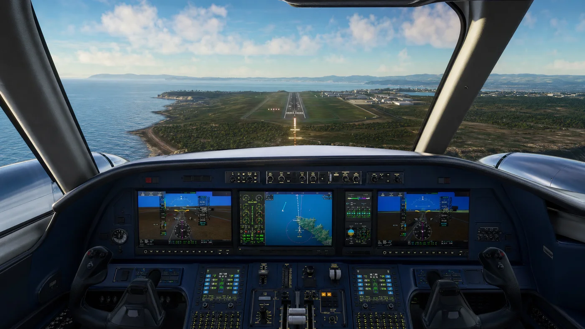
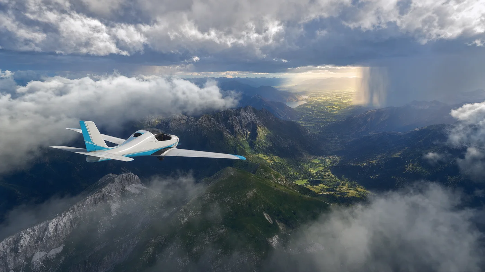

끊김 없이 이어지는 비행 구역
해안, 섬, 산악 지형을 하나의 항로로 연결합니다.
GODOT 4 · BUILD 0.8.4
바람과 기체의 반응을 직접 느끼는 오픈 플라이트 프로젝트
실시간 Godot 렌더링 콘셉트 · Fictional aircraft
PROJECT HIGHLIGHTS
해안, 섬, 산악 지형을 하나의 항로로 연결합니다.

비행 계기와 접근 절차가 실제 조작 흐름에 맞춰 반응합니다.

구름, 강수, 측풍이 시야와 기체 운동에 영향을 줍니다.
DEVELOPMENT LOG
FLIGHT TEST 042